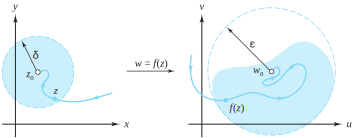

Let \(u=u(x, y)\) be a real-valued function of the two real variables \(x\) and \(y\text{.}\) Recall that \(u\) has the limit \(u_0\) as \((x, y)\) approaches \((x_0, y_0)\) provided the value of \(u(x,y)\) can be made to get as close as we want to the value \(u_0\) by taking \((x, y)\) to be sufficiently close to \((x_0, y_0)\text{.}\) When this happens we write
In more technical language, \(u\) has the limit \(u_0\) as \((x, y)\) approaches \((x_0, y_0)\) iff \(|u(x, y) -u_0|\) can be made arbitrarily small by making both \(|x-x_0|\) and \(|y-y_0|\) small. This condition is like the definition of a limit for functions of one variable. The point \((x, y)\) is in the \(xy\) plane, and the distance between \((x, y)\) and \((x_0 y_0)\) is \(\sqrt{(x-x_0)^2+(y-y_0)^2}\text{.}\) With this perspective we can now give a precise definition of a limit.
Definition2.3.1.Limit of \(\mathbf{u(x,y)}\).
The expression \(\lim\limits_{(x,y) \to (x_0,y_0)}u(x, y)=u_0\) means that for each number \(\varepsilon > 0\text{,}\) there is a corresponding number \(\delta > 0\) such that
Hence, for any \(\varepsilon >0\text{,}\) Inequality (2.3.1) is satisfied for \(\delta =\frac{\varepsilon}{2}\text{;}\) that is, \(u(x, y)\) has the limit \(u_0=0\) as \((x, y)\) approaches \((0, 0)\text{.}\)
The value \(u_0\) of the limit must not depend on how \((x, y)\) approaches \((x_0, y_0)\text{,}\) so \(u(x, y)\) must approach the value \(u_0\) when \((x, y)\) approaches \((x_0,\,y_0)\) along any curve that ends at the point \((x_0,\,y_0)\text{.}\) Conversely, if we can find two curves \(C_1\) and \(C_2\) that end at \((x_0, y_0)\) along which \(u(x, y)\) approaches two distinct values \(u_1\) and \(u_2\text{,}\) then \(u(x, y)\) does not have a limit as \((x, y)\) approaches \((x_0, y_0)\text{.}\)
Because the value of the limit differs depending on how \((x, y)\) approaches \((0, 0)\text{,}\) we conclude that \(u(x, y)\) does not have a limit as \((x, y)\) approaches \((0, 0)\text{.}\)
Let \(f(z)\) be a complex function of the complex variable \(z\) that is defined for all values of \(z\) in some neighborhood of \(z_0\text{,}\) except perhaps at the point \(z_0\text{.}\) We say that \(f\) has the limit \(w_0\) as \(z\) approaches \(z_0\text{,}\) provided the value \(f(z)\) can be made as close as we want to the value \(w_0\) by taking \(z\) to be sufficiently close to \(z_0\text{.}\) When this happens we write
The distance between the points \(z\) and \(z_0\) can be expressed by \(|z-z_0|\text{,}\) so we can give a precise definition similar to the one for a function of two variables.
Definition2.3.4.Limit of \(\mathbf{f(z)}\).
The expression \(\lim\limits_{z \to z_0}f(z) = w_0\) means that for each real number \(\varepsilon > 0\text{,}\) there exists a real number \(\delta >0\) such that
The formulation of limits in terms of open disks provides a good context for looking at this definition. It says that for each disk of radius \(\varepsilon\) about the point \(w_0\) (represented by \(D_{\varepsilon}(w_0)\)) there is a punctured disk of radius \(\delta\) about the point \(z_0\) (represented by \(D_{\delta}^*(z_0)\)) such that the image of each point in the punctured \(\delta\) disk lies in the \(\varepsilon\) disk. The image of the \(\delta\) disk does not have to fill up the entire \(\varepsilon\) disk; but if \(z\) approaches \(z_0\) along a curve that ends at \(z_0\text{,}\) then \(w=f(z)\) approaches \(w_0\text{.}\) The situation is illustrated in Figure 2.3.5.

Figure2.3.5.As \(z \to z_0\) the function values \(f(z) \to w_0\)
As \(f\) merely reflects points about the \(y\) axis, we suspect that any \(\varepsilon\) disk about the point \(\overline{z_0}\) would contain the image of the punctured \(\delta\) disk about \(z_0\) if \(\delta =\varepsilon\text{.}\) To confirm this conjecture, we let \(\varepsilon\) be any positive number and set \(\delta =\varepsilon\text{.}\) Then we suppose that \(z\in D_{\delta}^*(z_0) =D_{\varepsilon}^*(z_0)\text{,}\) which means that \(0\lt |z-z_0|\lt \varepsilon\text{.}\) The modulus of a conjugate is the same as the modulus of the number itself, so the last inequality implies that \(0\lt |\overline{z-z_0}| \lt \varepsilon\text{.}\) This inequality is the same as \(0\lt |\overline{z}-\overline{ z_0}|\lt \varepsilon\text{.}\) Since \(f(z) =\overline{z}\) and \(w_0=\overline{z_0}\text{,}\) this last inequality becomes \(0\lt |f(z) - w_0|\lt \varepsilon\text{,}\) or \(f(z)\in D_{\varepsilon}(\overline{z_0})\text{,}\) which is what we needed to show.
If we consider \(w=f(z)\) as a mapping from the \(z\) plane into the \(w\) plane and think about the previous geometric interpretation of a limit, then we are led to conclude that the limit of a function \(f\) should be determined by the limits of its real and imaginary parts, \(u\) and \(v\text{.}\) This conclusion also gives us a tool for computing limits.
Theorem2.3.7.
Let \(f(z) = u(x, y) +iv(x, y)\) be a complex function that is defined in some neighborhood of \(z_0\text{,}\) except perhaps at \(z_0=x_0+iy_0\text{.}\) Then
We first assume that Statement (2.3.2) is true and show that Statement (2.3.3) is true. According to the definition of limit, for each \(\varepsilon >0\text{,}\) there is a corresponding \(\delta >0\) such that
It now follows that \(|u(x, y) -u_0|\lt \varepsilon\) and \(|v(x, y) -v_0|\lt \varepsilon\) whenever \(0\lt |z-z_0|\lt \delta\text{,}\) and so Statement (2.3.3) is true.
Conversely, assume that Statement (2.3.3) is true. Then for each \(\varepsilon >0\text{,}\) there exists \(\delta _1>0\) and \(\delta_2>0\) so that
so our previous theorem implies that \(\lim\limits_{z \to 1+i}\)\(f(z) = -1\text{.}\)
Limits of complex functions are formally the same as those of real functions, and the sum, difference, product, and quotient of functions have limits given by the sum, difference, product, and quotient of the respective limits. We state this result as a theorem and leave the proof as an exercise.
Theorem2.3.9.
Suppose that \(\lim\limits_{z \to z_0}\)\(f(z) = A\) and \(\lim\limits_{z \to z_0}g(z) =B\text{.}\) Then
Let \(u(x, y)\) be a real-valued function of the two real variables \(x\) and \(y\text{.}\) We say that \(u\) is continuous at the point \((x_0,\,y_0)\) if three conditions are satisfied:
Condition (2.3.9) actually implies Conditions (2.3.7) and (2.3.8) because the existence of the quantity on each side of Equation (2.3.9) is implicitly understood to exist. For example, if \(u(x, y) =\frac{x^3}{x^2+y^2}\) when \((x, y) \ne (0,\,0)\) and if \(u(0,\,0) =0\text{,}\) then \(u(x, y) \to (0,\,0)\) so that Conditions (2.3.7), (2.3.8), and (2.3.9) are satisfied. Hence \(u(x, y)\) is continuous at \((0,\,0)\text{.}\)
There is a similar definition for complex valued functions.
Let \(f(z)\) be a complex function of the complex variable \(z\) that is defined for all values of \(z\) in some neighborhood of \(z_0\text{.}\) We say that \(f\) is continuous at \(z_0\) if three conditions are satisfied:
Example 2.3.6 shows that the function \(f(z) = \overline{z}\) is continuous.
A complex function \(f\) is continuous iff its real and imaginary parts, \(u\) and \(v\text{,}\) are continuous. The proof of this fact is an immediate consequence of Theorem 2.3.7. Continuity of complex functions is formally the same as that of real functions, and sums, differences, and products of continuous functions are continuous; their quotient is continuous at points where the denominator is not zero. These results are summarized by the following theorems. We leave the proofs as exercises.
Theorem2.3.13.
Let \(f(z) =u(x, y) +iv(x, y)\) be defined in some neighborhood of \(z_0\) Then \(f\) is continuous at \(z_0=x_0+iy_0\) iff \(u\) and \(v\) are continuous at \((x_0,\,y_0)\text{.}\)
Theorem2.3.14.
Suppose that \(f\) and \(g\) are continuous at the point \(z_0\text{.}\) Then the following functions are continuous at \(z_0\text{:}\)
The sum \(f+g\text{,}\) where \((f+g)(z)=f(z) +g(z)\text{;}\)
The difference \(f-g\text{,}\) where \((f-g)(z)=f(z)-g(z)\text{;}\)
The product \(fg\text{,}\) where \((fg) (z)=f(z)g(z)\text{;}\)
The quotient \(\frac{f}{g}\text{,}\) where \(\frac{f}{g}(z)=\frac{f(z)}{g(z)}\text{,}\) provided \(g(z_0) \ne 0\text{;}\) and
The composition \(f\circ g\text{,}\) where \((f\circ g)(z) =f\big(g(z)\big)\text{,}\) provided \(f\) is continuous in a neighborhood of \(g(z_0)\text{.}\)
If \(a_0\) is the constant function, then \(\lim\limits_{z \to z_0}a_0 = a_0\text{;}\) and if \(a_1 \ne 0\text{,}\) then we can use Definition 2.3.4 with \(f(z) =a_1z\) and the choice \(\delta =\frac{\varepsilon}{|a_1|}\) to prove that \(\lim\limits_{z \to z_0}(a_1z) = a_1z_0\text{.}\) Using Property (2.3.5) and mathematical induction, we obtain
\begin{equation}
\lim\limits_{z \to z_0}(a_kz^k) =a_kz_0^k \text{ for } k=0,1,2,\ldots,n\text{.}\tag{2.3.13}
\end{equation}
We can extend Property (2.3.4) to a finite sum of terms and use the result of Equation (2.3.13) to get
Conditions (2.3.10), (2.3.11), and (2.3.12) are satisfied, so we conclude that \(P\) is continuous at \(z_0\text{.}\)
One technique for computing limits is to apply Theorem 2.3.14 to quotients. If we let \(P\) and \(Q\) be polynomials and if \(Q(z_0) \ne 0\text{,}\) then
Another technique involves factoring polynomials. If both \(P(z_0) =0\) and \(Q(z_0) =0\text{,}\) then \(P\) and \(Q\) can be factored as \(P(z) = (z-z_0) P_1(z)\) and \(Q(z)= (z-z_0)Q_1(z)\text{.}\) If \(Q_1(z_0) \ne 0\text{,}\) then the limit is
\(\lim\limits_{z \to z_0}(e^x\cos y+ix^2y) = \lim\limits_{(x,y) \to (x_0,y_0)}(e^x\cos y+ix^2y)\text{.}\)Theorem 2.3.7 now implies the result since the real and imaginary parts of the last expression have limits that imply the desired conclusion. You should show the details for this, of course.
Let \(f(z) =\frac{z\mathrm{Re}(z)}{|z|}\) when \(z \ne 0\) and let \(f(0) =0\text{.}\) Show that \(f(z)\) is continuous for all values of \(z\text{.}\)
7.
Let \(f(z) =\frac{z^2}{|z|^2} = \frac{x^2-y^2+i2xy}{x^2+y^2}\text{.}\)
(a)
Find \(\lim\limits_{z \to 0}\ f(z)\) as \(z \to 0\) along the line \(y=x\text{.}\)
No. To see why, approach \(0\) along the real and imaginary axes respectively.
10.
Does \(\lim\limits_{z \to -4}\)\(\mathrm{Arg}\,z\) exist? Why? \hint{Use polar coordinates and let \(z\) approach \(-4\) from the upper and lower half-planes.}
11.
Let \(f(z)=z^{\frac{1}{2}}=r^{\frac{1}{2}}(\cos \frac{\theta}{2}+i\sin \frac{\theta}{2})\text{,}\) where \(z=re^{i\theta}\text{,}\)\(r>0\text{,}\) and \(-\pi \lt \theta \le \pi\text{.}\) Use the polar form of \(z\) and show that
(a)
\(f(z) \to i\) as \(z \to -1\) along the upper semicircle \(r=1\text{,}\)\(0\lt \theta \le \pi\text{.}\)
The real part is continuous since \(\lim\limits_{z \to z_0}xe^y = \lim\limits_{(x,y) \to (x_0,y_0)}xe^y = x_0e^{y_0}\text{.}\) A similar argument shows the imaginary part is continuous. Theorem 2.3.7 then implies that function \(f\) is continuous.
14.
Use the definition of the limit to show that \(\lim\limits_{z \to 3+4i}\)\(z^2=-7+24i\text{.}\)
15.
Let \(f(z) =\frac{\mathrm{Re}(z)}{|z|}\) when \(z \ne 0\) and let \(f(0) =1\text{.}\) Is \(f(z)\) continuous at the origin?
Let \(f(z) =\frac{\big(\mathrm{Re}(z)\big)^2}{|z|}\) when \(z \ne 0\) and let \(f(0) =0\text{.}\) Is \(f(z)\) continuous at the origin?
17.
Let \(f(z) =z^{\frac{1}{2}}=|z|^{\frac{1}{2}}e^{i\frac{\mathrm{Arg}(z)}{2}}\text{,}\) where \(z \ne 0\text{.}\) Show that \(f(z)\) is discontinuous at each point along the negative \(x\) axis.
Rewrite \(f\) as in Exercise 2.3.11, and mimic the argument for part a with an arbitrary negative real number taking the role of \(-1\text{.}\)
18.
Let \(f(z) =\ln |z|+i\mathrm{Arg}(z)\text{,}\) where \(-\pi \lt \mathrm{Arg}(z) \le \pi\text{.}\) Show that \(f(z)\) is discontinuous at \(z_0=0\) and at each point along the negative \(x\) axis.
19.
Let \(|g(z) |\le M\) and \(\lim\limits_{z \to z_0}\)\(f(z) =0\text{.}\) Show that \(\lim\limits_{z \to z_0}\)\(f(z) g(z) =0\text{.}\) Note: Theorem 2.3.9 is of no use here because you don’t know whether \(\lim\limits_{z \to z_0}g(z)\) exists. Give an \(\varepsilon, \, \delta\) argument.
Let \(\varepsilon >0\) be given. Since \(\lim\limits_{z \to z_0}f(z)=0\text{,}\) there is some number \(\delta\) such that \(f(z) \in D_{\frac{\varepsilon}{M}}(0)\) whenever \(z\in D_{\delta }^*(z_0)\text{.}\) Show this implies that if \(z \in D_{\delta}^*(0)\text{,}\) then \(|f(z)g(z)-0|=|f(z)|\,|g(z)|\lt \varepsilon\text{,}\) so that \(f(z)g(z) \in D_{\varepsilon}(0)\text{.}\)
20.
Let \(\Delta z=z-z_0\text{.}\) Show that \(\lim\limits_{z \to z_0}\)\(f(z) = w_0\) iff \(\lim\limits_{\Delta z \to 0}\)\(f(z_0+\Delta z) = w_0\text{.}\)
21.
Let \(f(z)\) be continuous for all values of \(z\text{.}\)
(a)
Show that \(g(z) =f(\overline{z})\) is continuous for all \(z\text{.}\)
We have remarked that Example 2.3.6 shows that the function \(h(z)=\bar{z}\) is continuous for all \(z\text{.}\) Since \(f\) is continuous for all \(z\text{,}\) we can apply Theorem 2.3.14 to the function \(f\circ h\) to conclude that \(g(z)=f\big(h(z)\big) =f(\bar{z})\) is continuous for all \(z\text{.}\)
(b)
Show that \(g(z) =\overline{f(z)}\) is continuous for all \(z\text{.}\)